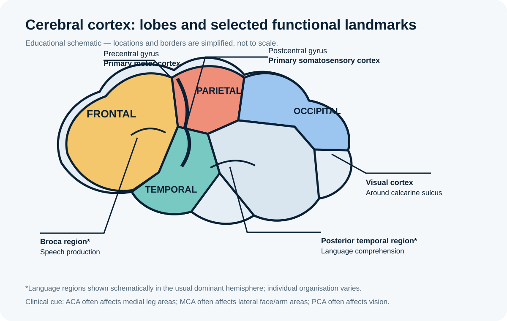
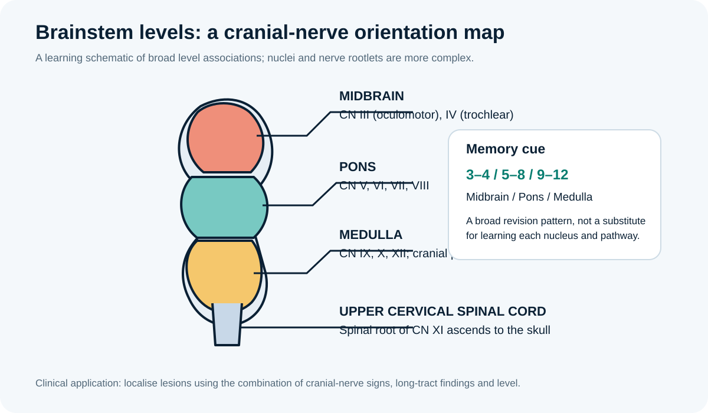
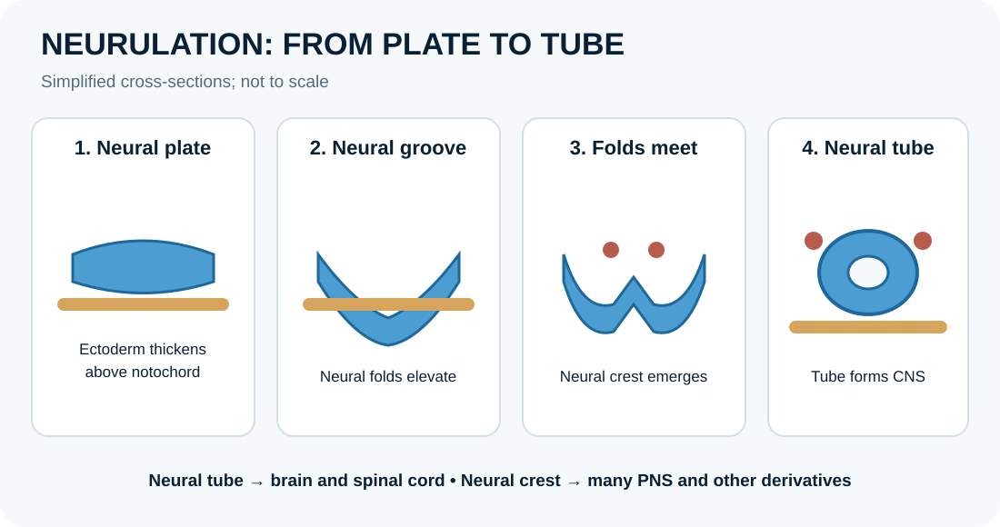

NEUROANATOMY
Sensory and motor pathways
Track what travels, where it crosses and why a lesion can produce signs on one side or the other.
Study ascending sensory pathways ↗ · Study descending motor pathways ↗ORIGINAL VISUAL LEARNING
Use a picture to orient yourself, then return to the lesson to explain the relationships from memory. These are original teaching schematics, not diagnostic images and not a replacement for a full anatomical atlas.
Track what travels, where it crosses and why a lesion can produce signs on one side or the other.
Study ascending sensory pathways ↗ · Study descending motor pathways ↗
Use broad cortical landmarks to organise movement, sensation, language and vision. Functional areas vary between individuals.
Study brain anatomy ↗ · Connect with vascular territories ↗
Remember the broad pattern for cranial nerve levels, then learn each nucleus, modality and exit point separately.
Study brainstem nuclei ↗
Week 1: cleavage and blastocyst; week 2: bilaminar disc; week 3: gastrulation; week 4: neurulation and folding; weeks 5–8: organogenesis.
Start with the history and principles ↗ · Week 1 ↗
Follow the sequence from neural plate to tube and neural crest, and connect failed closure with neural tube defects.
Study week 4 ↗
Use the germ layers as a framework for understanding how organs arise from coordinated tissues.
Study week 3 ↗
Trace the normal impulse through the conducting system and relate it to coordinated contraction.
Study cardiac conduction ↗
Orient the renal corpuscle and tubule segments before studying filtration, reabsorption and secretion.
Study nephron structure ↗
Connect sagittal, coronal and transverse planes with real sectional images and directional language.
Study anatomical planes ↗
Use the labeled anterior views to orient regional terminology before moving from surface landmarks to deep structures. Check the source page for the image and its reuse status.
Image: Mikael Häggström, Anatomia humana.svg, CC0 1.0 public-domain dedication.
Source, licence and original file ↗
Compare the historical depiction with modern neuroanatomical terminology. This is an old engraved/illustrated plate, not a modern photograph of a dissected cadaver; use it for historical context, not as the sole guide to current anatomical detail.
Image: Wellcome Library, London, “Dissection of the human body” (L0071573), CC BY 4.0. No changes made to the image.
Source, licence and original file ↗ACTIVE RECALL
Choose one answer for each question, then submit to see your score and explanations. Try answering before reopening the diagrams.